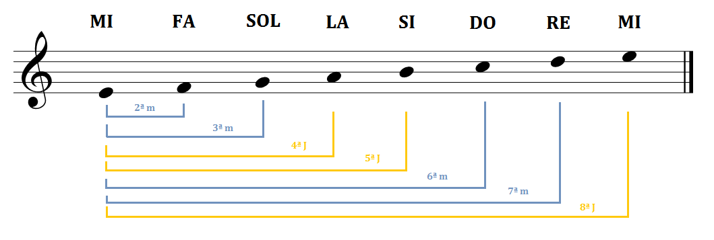
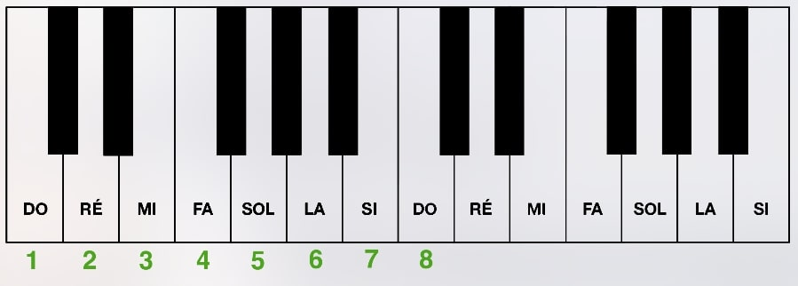

Un intervalo es la distancia entre dos notas musicales 🎶. Es fundamental para construir acordes y escalas. Por ejemplo: Do - Re es un intervalo de segunda.

Los intervalos pueden ser mayores, menores, justos, aumentados o disminuidos. Se clasifican según la cantidad de tonos y semitonos entre las notas.

2ª mayor: Do - Re
3ª mayor: Do - Mi
5ª justa: Do - Sol
8ª (octava): Do - Do
Comparte tu opinión o sugerencias.
Ahora entiendo mejor los intervalos.
Muy claro y fácil de aprender.
Me gustaría practicar más ejemplos.